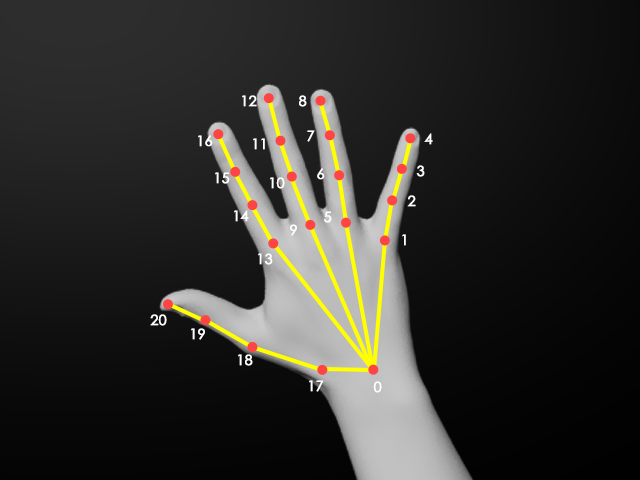

姿态估计评价指标¶

假设一只手有 \(N=21\) 个关节点，算法预测的关节点为 \(J_{i}\) ，关节点GT为 \(J_{i}^{*}\)。
常用评价指标¶
MPJPE (Mean Per Joint Position Error)¶
MPJPE表示平均每关节位置误差，用来评估关关节点的误差，它的公式如下（单位在2D时为pix, 在3D时为mm）:
MPJPE: 表示预测关节点与GT关节点二者的欧式距离
N-MPJPE (Normalized MPJPE): 定义为将预测位置按尺度归一化后的MPJPE
MPJPA(Mean Per Joint Position Acceleration)¶
MPJPA表示平均每关节位置加速度，用来评估关节点的抖动情况，需要在连续图像帧或者视频中测试。它的公式如下（单位在2D时为pix, 在3D时为mm）：
其中 \(J_{i,t}\) 表示第 \(t\) 帧的第 \(i\) 个关节点。
PCK（Percentage of Correct Keypoints）¶
pck表示正确关节点百分比， 用来表示正确关节点占总数的百分比。在人体关节点指标中，PCK将头部长度(head length) \(h\) 作为归一化因子。则关节点\(J_{i}\)估计误差与头长的比值记为 \(d_{j}\)
则关节点\(J_{i}\)的\(PCK_{j}\)定义为, 其中 \(\alpha\)为阈值：
阈值为0.5则写作PCKh@0.5，阈值为0.2则写作PCKh@0.2。
显然对手来说，应该将手长作为归一化因子。
在2D情况下，手在图像画面的远近会显著影响\(PCK\)指标的稳定性。为了消除手的尺度影响，我们将手的GT检测框归一化到 \(100\times100\) 的尺度，\(h\) 取100. 此时，阈值0.2表示关节点误差不超过 \(0.2 \times 100=20\) 个像素。
在3D情况下，h取手掌长，即手部关节点0到手部关节点9的长度。此时，阈值0.2表示关节点误差不超过手掌长度的0.2。
PCH（Percentage of Correct Hands）¶
自定义指标
pch表示正确手百分比，即在pck的基础上升级的概念。记作：
简单来说, pck是以关节点为对象来说的，pch是以手为对象来说的，需要手上的所有关节点都满足约束：
PCP（Percentage of Correct Parts）¶
自定义指标
pch表示正确部件百分比，即在pck的基础上升级的概念。比如可以定义五指分别为一个部件，则可以统计每根手指为整体的pck正确率。
例如，记5根手指的部件集为：
则第\(k\)根手指\(p_{k}\) 的PCP定义为：
若以整个手为一个部件，则等价于PCH， 也就是说PCH是PCP的特例。
2D 评价指标¶
统计MPJPE, MPJPA, PCK, PCH 指标，如果对pinch click有强精度要求，也可以统计其PCP指标。
注意 PCK 在图像上需要归一化到 \(100\times 100\) 尺度上操作，消除尺度差异性。
2.5D 评价指标¶
2.5D是算法输出是uvd, 其中 uv图像坐标，d是相对深度。因此需要将2.5D评价指标分为两部分。
d是相对深度，它是减去根关节点深度，再除以手掌长度\(h\)（手部关节点0到手部关节点9的长度）进行归一化。 计算公式如下：
-
UV的评价指标
UV应该按照2D评价指标进行操作。 -
D的评价指标
d应该先乘上手掌长度，将单位换成mm. 再按3D评价指标计算。
P.S.: 对于没有测量的手掌长度，可以事先测量好平均值。比如定为男100mm，女80mm
3D评价指标¶
统计MPJPE, MPJPA指标， 单位为mm。Meta的论文中使用的指标。